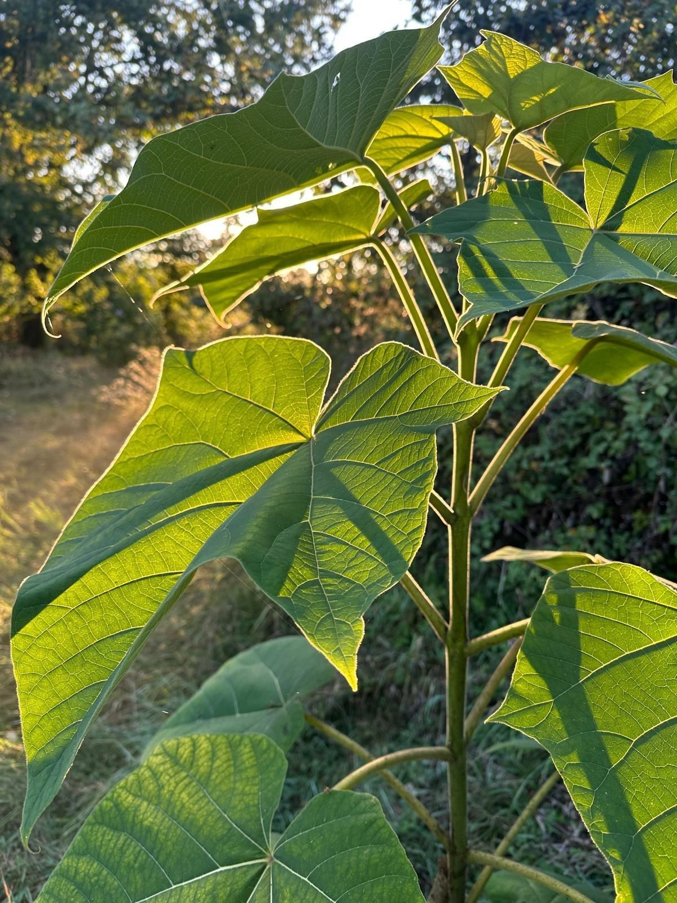
Investors
Talk to us about taking part
Participation starts at €100,000. We explain the project, the set-up and the risks personally, with no obligation.
Get in touch →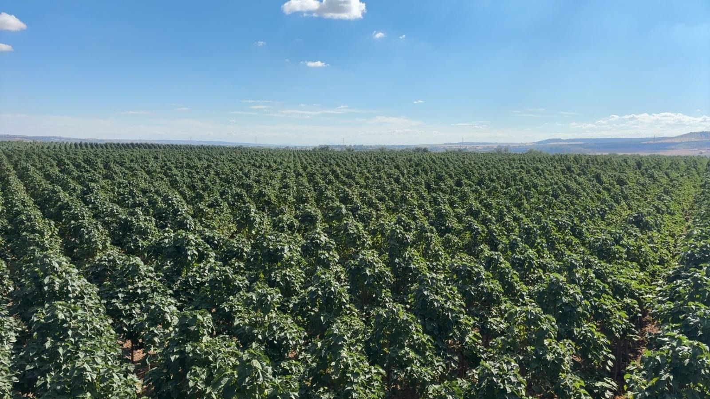
Project Central Spain · planting targeted for 2028
ForestsForFuture is developing a 100-hectare Paulownia plantation on irrigated land south-west of Madrid. The timber is sold in Europe and the trees store CO₂ while they grow.
Why now
117 million m³projected wood shortfall in Europe by 20401
If demand for bioenergy grows strongly, the gap widens to 190 million m³. Southern Europe feels it first: there, wood availability is expected to drop below industrial demand within this decade.1,2
The EU has banned wood from Russia and Belarus since 2022.3 Since November 2025, hardwood plywood from China carries an 86.8% anti-dumping duty.4
From 30 December 2026, large and medium-sized companies may only sell wood in the EU if it is deforestation-free and traceable to the plot where it grew.5
Illegal logging also happens inside the EU. In 2020 the European Commission started infringement proceedings against Romania over it.6
Our answer: grow timber on European farmland and document it from the day it is planted, so natural forests don't have to supply it.
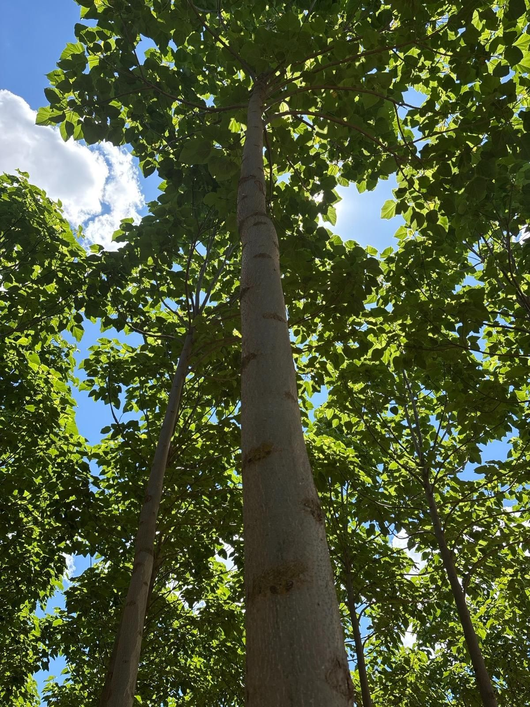
The tree
Most European timber species need several decades to reach a useful size. Paulownia gets there in six to ten years, and the wood is light, stable and easy to work. In the trade it is called the aluminium of timber.
How it works
We only buy land once water, soil and legal status have been checked and the capital is committed. That takes longer, and it is how you end up with a good plantation. Below is the plan, including where we are today.
Calendar years are counted from the targeted planting in 2028 and will shift if planting moves.
With ProAg Invest we assess plots in central Spain and talk to landowners whose land meets our criteria.
Soil analysis, water rights and the legal status of each plot are checked before any purchase.
The land is bought, not leased, once the capital is committed, so no lease can end halfway through a cycle.
825 trees per hectare, planted with our cultivation partner using proven protocols and genetics.
Timber is sold to European buyers, with the first harvest after 6 to 8 years and the main harvest in years 9 to 10.
The plantation sprouts again from its own roots and keeps producing timber for 50 years or more.
Who we work with

Participation starts at €100,000. We explain the project, the set-up and the risks personally, with no obligation.
Get in touch →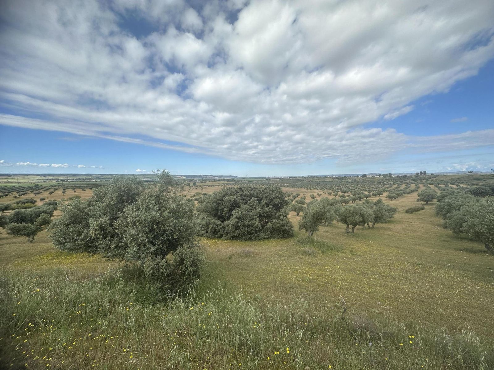
We buy land south-west of Madrid with secured water rights, well-draining soil and access for machinery. If your plot fits, we would like to hear from you.
Get in touch →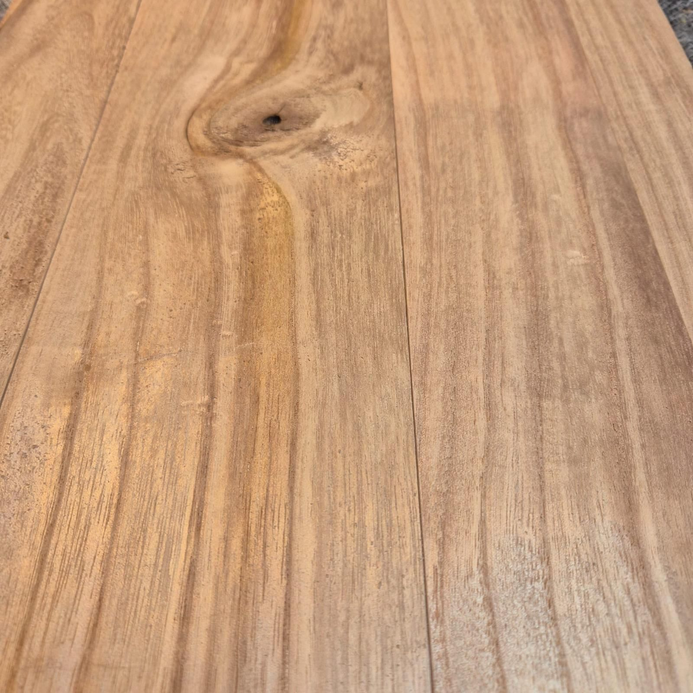
Our team already makes tiny houses, saunas and modular elements from Paulownia. Builders and manufacturers can talk to us now about future supply.
Get in touch →What the figures rest on
We use published research and our own cost figures, and we say which is which. Once the trees are in the ground, measured data from our own plots replaces the estimates.
Working estimate. Based on 16 t of dry matter per hectare per year from Stichting Probos, converted with the IPCC method, plus roots.9,10
The cost to society of one tonne of CO₂ emitted in 2025, according to PBL, the Dutch government's independent assessment agency.11
Planting density for Project Central Spain, following our cultivation partner's protocol.
Plants and maintains about one hectare. The land itself is bought separately.
Spanish agroforestry and investment partner with a network among local landowners. Supports land selection and on-site operations.
Independent non-profit with an open accounting framework for natural carbon removal, based on measured data. Members of our team have certified projects with them before.
An established European Paulownia grower already producing at scale in the same region. We will name them once the agreement is signed.
No land has been bought and nothing has been planted yet. We are open about that. As soon as there is something to measure, we publish growth, carbon storage and certification results here.
From the field · central Spain
7.5m
of trunk growth per shoot in a single season, measured on an existing plantation in the region two years after felling.
We picked central Spain because Paulownia already grows well there at scale. Nearby plantations share our climate and soils, so we can build on growth that has already been seen in the field.
Dr. Jaklien Leemans, the biologist on our team, is running a registered long-term field study into carbon storage and biodiversity on Paulownia plots. We report what we measure.
Interested parties can visit the region with us on request.
Financing
We are preparing the financing for the first plantation: half bank financing and half capital from investors, with a minimum participation of €100,000. Land and trees form the asset; timber sales are the main source of income.
Interested in taking part?
Participation starts at €100,000. The financial terms, the structure and the risks are not set out on this website. We go through them personally and in writing with parties who get in touch, with no obligation.
Work it out
Illustration only. Climate figures use €20,000 per planted hectare, the ~30 t CO₂ working estimate and PBL's €187 per tonne. Avoided climate damage shows the scale of the impact; it is not income and not a return.
Our planning is based on timber sold at today's prices. Income from carbon credits, a rise in land value or higher timber prices caused by the shortage would be extra. None of these are assumed.
How we manage risk
The biggest risk comes before planting. We buy only when soil and water results are in and the plot meets all six of our criteria.
We only invest in irrigated land with water rights in place, which matters in the Iberian climate.
Paulownia has thick bark and little resin. We add firebreaks to the layout and insure the plantation.
We do not count on prices rising from the shortage, and we sell through several channels instead of one.
Planting and harvest are done by a grower already producing at scale in the same region, with tested protocols and genetics.
Carbon credits are left out of our base case. If they come in, it is extra income.
Intended structure
The final legal structure is set with legal and tax advisers before the first purchase. This is our starting point.
ForestsForFuture is a project in development. Land for the first plantation is currently being selected and has not yet been acquired. This website is for general information only. It does not constitute an offer, advice or invitation to invest under the Dutch Financial Supervision Act (Wft), and no returns are promised or implied. Any participation requires a minimum of €100,000 per participant and is only possible on the basis of written documentation provided separately. Investing in a plantation project carries risk: you may lose part or all of the money you put in. Consider consulting an independent adviser before you decide.
Impact
How we get from a published growth figure to the climate value of one hectare, step by step.
dry matter per hectare per year, a preliminary estimate from European trials.9
carbon share of wood, converted to CO₂ with the IPCC 2006 method.10
our working estimate, to be replaced by measurements on our own plots.
climate damage avoided per hectare per year, at PBL's 2025 value.11
Probos made its estimate for Dutch conditions. Central Spain has a longer, warmer growing season and our plots will be irrigated, so we expect faster growth there. Certification will be done by Oncra on the basis of measured data.
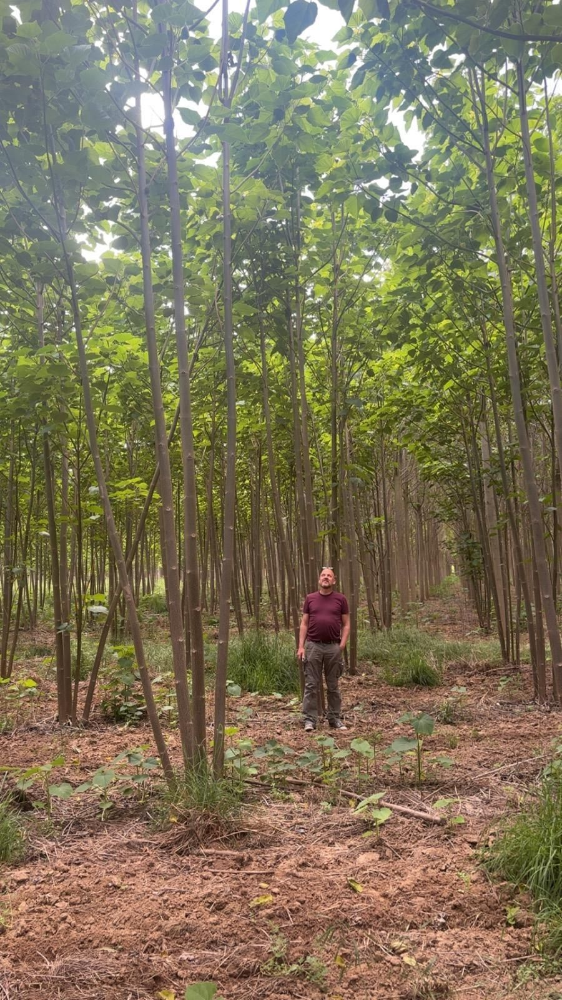
The broad canopy shades the ground and limits evaporation, which counts in the Iberian summer.
A dense root system holds the soil in place during heavy rain.
Compared with intensively farmed arable land, a plantation gives shelter, shade and leaf litter that feeds the soil and what lives in it.
Every cubic metre grown on farmland is one that does not have to be cut from a natural forest.
Who we are
Entrepreneurs who have built and sold companies, together with hands-on experience in Paulownia, timber processing and research. You speak directly with them.
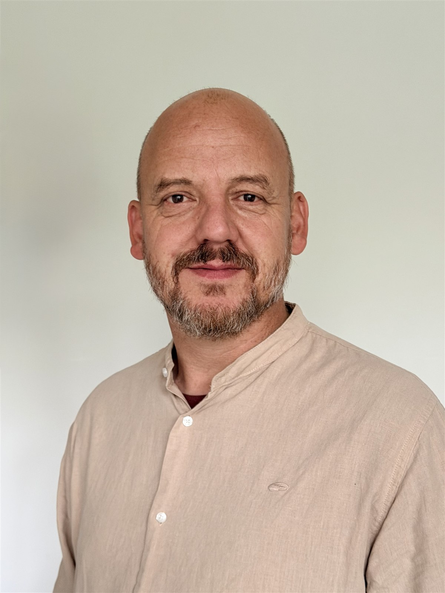
CEO & co-founderMechanical engineer who built and sold a sustainable building-services company over sixteen years. Leads timber sales and applications, from tiny houses to saunas.
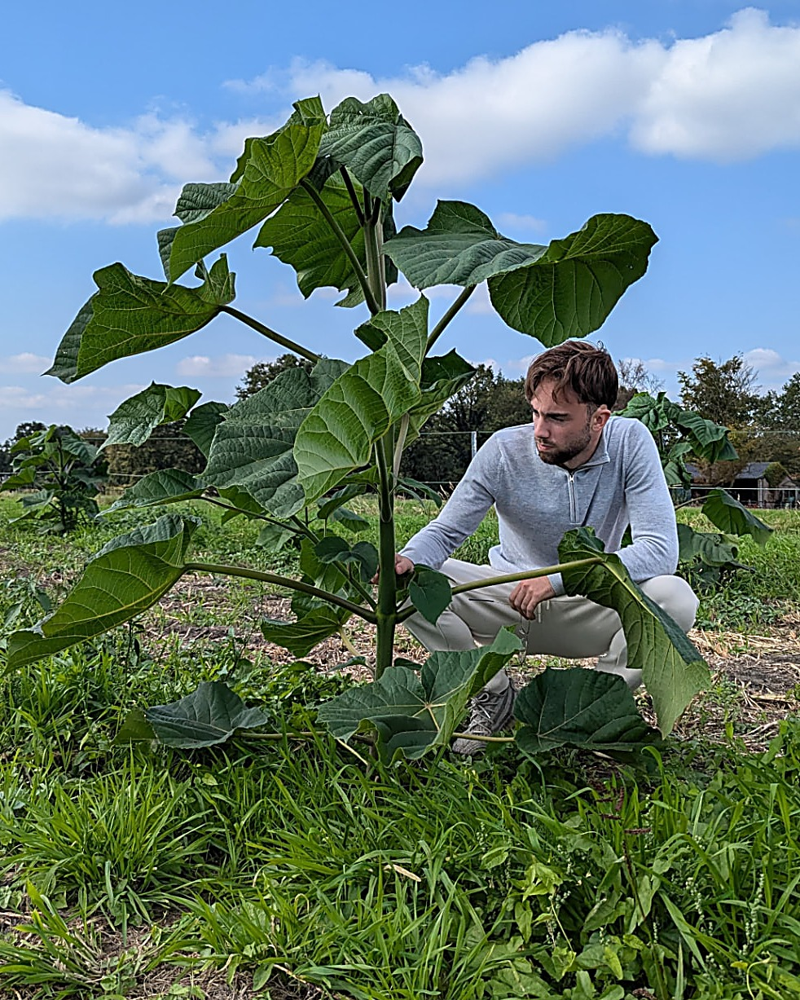
Co-founder · CBOBackground in forest and nature management, four years in the Paulownia and carbon market. Manages partners, cultivation and financing, and is the first point of contact.
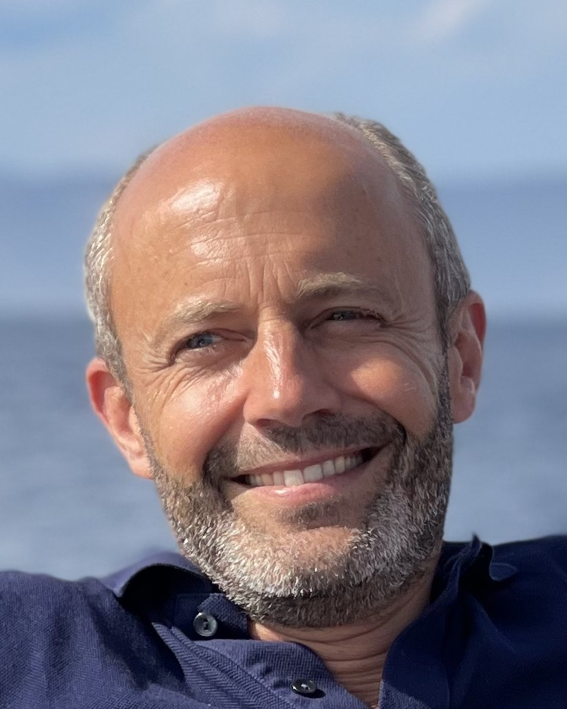
Business growthPhysicist (TU Delft) with twenty years as an executive: private equity at HAL Investments, CEO of Imprima, COO of Sungevity, CEO of SenseGlove. Works part-time on scaling up.
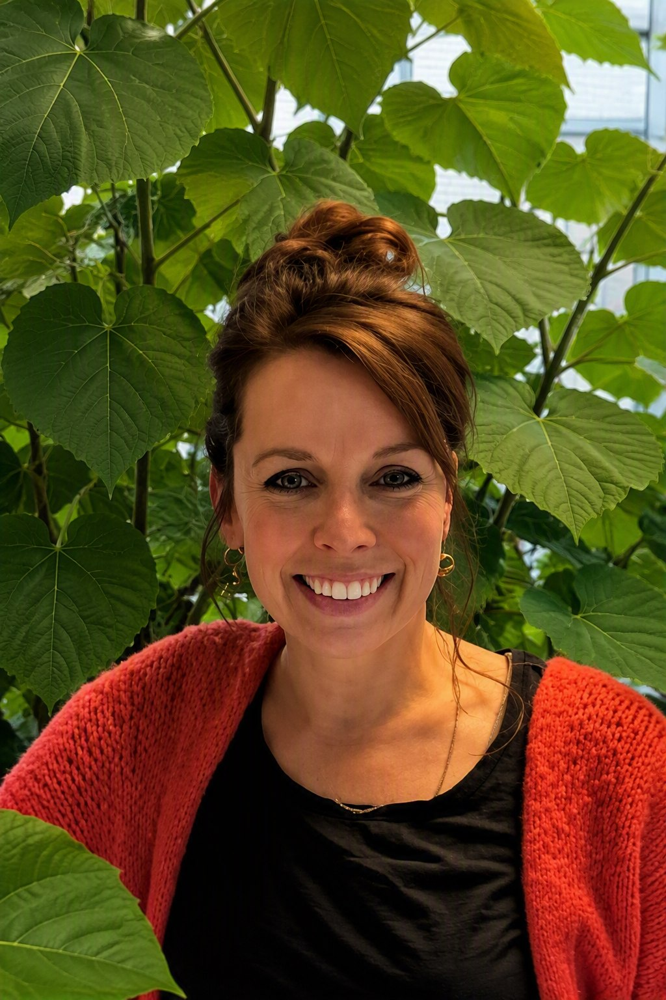
Science & researchBiologist (Utrecht University) with a PhD in microbiology (University of Amsterdam) and 25+ years of research. Leads the field study on carbon, biodiversity and land use.
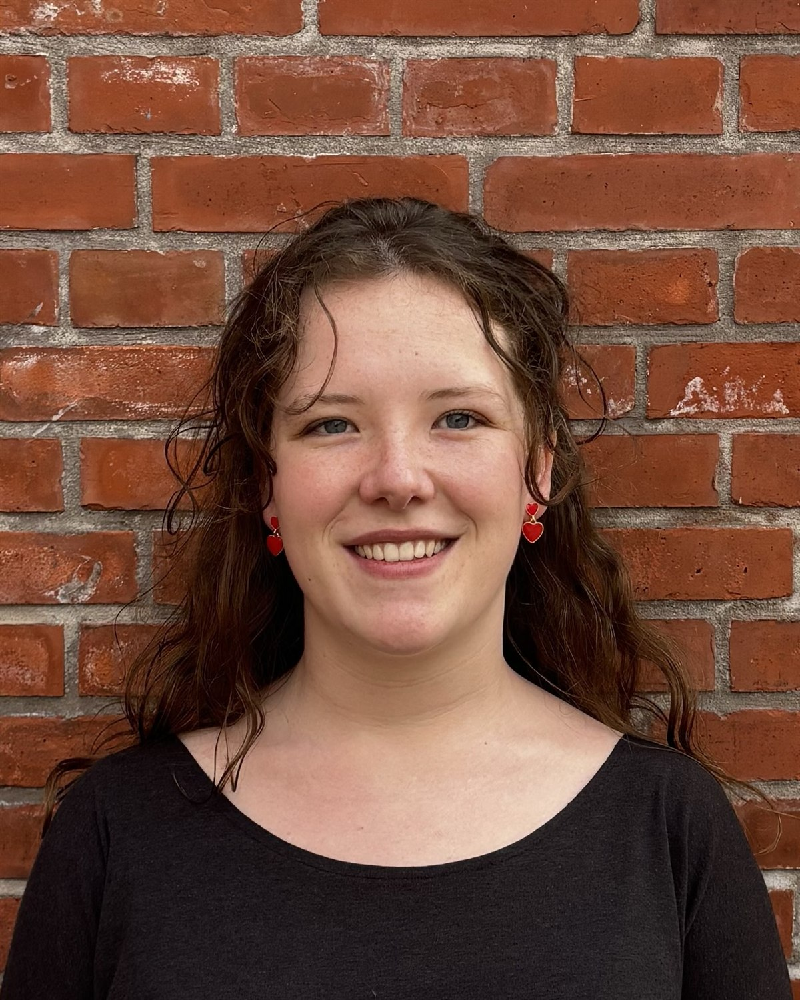
Strategy & operationsMaster's in Strategic Entrepreneurship from Erasmus University Rotterdam. Sets the strategic priorities and keeps the team working towards them.
We are selecting land. With ProAg Invest we assess plots in central Spain on water, soil, location and price. We buy after due diligence and once the capital is committed, and we aim to plant in 2028.
€100,000. Larger investors can ask about an equity stake in the company; we discuss that case by case.
We do not publish returns or terms on this website. We go through the financial set-up, the assumptions and the risks personally and in writing with interested parties. Returns are never guaranteed, and you may lose part or all of the money you put in.
The land is bought, not leased, and held by the project entity, with land, water and harvesting rights recorded by notarial deed. The trees are recorded as a separate asset. The final structure is set with legal and tax advisers before purchase.
Paulownia resists fire well thanks to its thick bark and low resin content. The plantation is laid out with firebreaks and will be insured.
Oncra, the open non-profit framework of the Climate Cleanup Foundation, certifies the stored CO₂ on the basis of measured data. Because the carbon market moves a lot, credits are left out of the base case.
Yes. Participants receive periodic updates on progress, finances and material risks. Frequency and format are set out in the written documentation.
Get in touch
Landowner, timber buyer, or interested in taking part from €100,000: we explain the project, the set-up and the risks personally, with no obligation.
We usually reply within two working days. Visits to the region can be arranged on request.